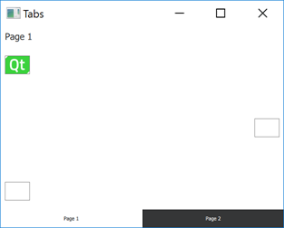
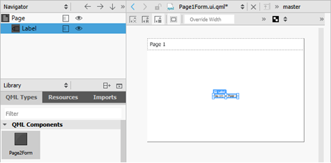
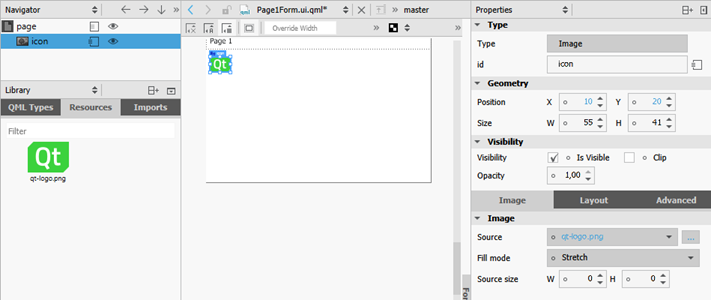
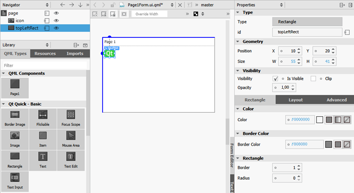
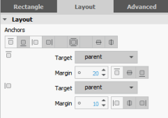
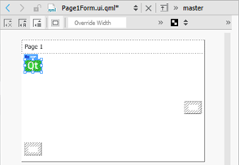
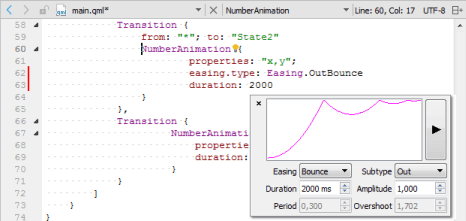

Creating a Qt Quick Application
This tutorial uses built-in QML types and illustrates basic concepts of Qt Quick. For more information about the UI choices you have, see User Interfaces.
This tutorial describes how to use Qt Creator to implement Qt Quick states and transitions. We create an application that displays a Qt logo that moves between three rectangles on the page when you click them.

For more information about developing Qt Quick applications in the Design mode, see Developing Qt Quick Applications.
For examples of using Qt Quick Controls, see Qt Quick Controls Examples.
Creating the Project
- Select File > New File or Project > Application > Qt Quick Application - Swipe > Choose.
- In the Name field, enter a name for the application.
- In the Create in field, enter the path for the project files, and then select Next (or Continue on macOS).
- In the Build system field, select the build system to use for building and running the project: qmake, CMake, or Qbs.
- In the Qt Quick Controls Style field, select one of the predefined UI styles to use, and then select Next.
- Select kits for the platforms that you want to build the application for. To build applications for mobile devices, select kits for Android ARM and iPhone OS, and click Next.
Note: Kits are listed if they have been specified in Tools > Options > Kits (on Windows and Linux) or in Qt Creator > Preferences > Kits (on macOS).
- Select Next.
- Review the project settings, and click Finish (or Done on macOS).
Qt Creator generates two UI files, Page1Form.ui.qml and Page2Form.ui.qml, and a QML file, main.qml. You can modify Page1Form.ui.qml in the Form Editor to create the application main view and main.qml in the Text Editor to add the application logic. For the purposes of this example, you can ignore Page2Form.ui.qml.
Creating the Main View
The main view of the application displays a Qt logo in the top left corner of the view and two empty rectangles.
To use the qt-logo.png image in your application, you must copy it from the Qt examples directory to the project directory (same subdirectory as the QML file). The image appears in Resources. You can also use any other image or a QML type, instead.
- In the Projects view, double-click the Page1Form.ui.qml file to open it in the Design mode.

- In the Navigator, select Label and press Delete to delete it.
- Select Page in the navigator, and enter page in the Id field.
- In Library > Resources, select qt-logo.png and drag and drop it to the page in the navigator.

- In the Id field, enter icon.
- In the Position field, set X to 10 and Y to 20.
- Right-click the resource file, qml.qrc, in the Projects view, and select Add Existing File to add qt-logo.png to the resource file for deployment.
- Drag and drop a Rectangle to page in the navigator and edit its properties.

- In the Id field, enter topLeftRect.
- In the Size field, set W to 55 and H to 41, for the rectangle size to match the image size.
- In the Color field, click the
 (Transparent) button to make the rectangle transparent.
(Transparent) button to make the rectangle transparent. - In the Border color field, set the border color to #808080.
- Click Layout, and then click the (Top) and (Left) anchor buttons to anchor the rectangle to the top left corner of the page.
- In the Margin field, select 20 for the top anchor and 10 for the left anchor.

- Drag and drop a Mouse Area type from the Library to topLeftRect in the navigator.
- Click Layout, and then click the
 (Fill to Parent) button to anchor the mouse area to the rectangle.
(Fill to Parent) button to anchor the mouse area to the rectangle. - In the Navigator, copy topLeftRect (by pressing Ctrl+C) and paste it to the page in the navigator twice (by pressing Ctrl+V). Qt Creator renames the new instances of the type topLeftRect1 and topLeftRect2.
- Select topLeftRect1 and edit its properties:
- In the Id field, enter middleRightRect.
- In Layout, select the (Vertical Center anchor button and then the (Right) anchor button to anchor the rectangle to the middle right margin of its parent.
- In the Margin field, select 10 for the right anchor and 0 for the vertical center anchor.
- Select topLeftRect2 and edit its properties:
- In the Id field, enter bottomLeftRect.
- In Layout, select the (Bottom) and (Left) anchor buttons to anchor the rectangle to the bottom left margin of its parent.
- In the Margin field, select 20 for the bottom anchor and 10 for the left anchor.
- In the Navigator, select the (Export) button for each type to export all types as properties. This enables you to use the properties in the main.qml file.
- Press Ctrl+S to save the changes.
To check your code, you can view Page1Form.ui.qml in the Text Editor and compare it with the Page1Form.ui.qml example file.
The new project wizard adds boilerplate code to the Page1.qml file to create menu items and push buttons. Modify the boilerplate code by removing obsolete code. You removed the push buttons from the UI form, so you also need to remove the corresponding code from Page1.qml (or the application cannot be built).
The UI is now ready and you can switch to editing the main.qml file in the Text Editor to add animation to the application, as described in the following section.

Adding Application Logic
Edit the main.qml file to add pointers to two additional states: State1 and State2. You cannot use the Form Editor to add states for a Window QML type. Use the Text Editor to add the states inside a StateGroup QML type and refer to them by using the id of the state group.
- Specify the window size and background color as properties of the ApplicationWindow type:
ApplicationWindow { visible: true width: 640 height: 480 title: qsTr("Tabs")
- Specify an id for the Page1 type to be able to use the properties that you exported in Page1Form.ui.qml:
SwipeView { id: swipeView anchors.fill: parent currentIndex: tabBar.currentIndex Page1Form { id: page - Add a pointer to the clicked expressions in mouseArea:
mouseArea { onClicked: stateGroup.state = ' ' }The expression sets the state to the base state and returns the image to its initial position.
- Add a pointer to a clicked expression to mouseArea1 to set the state to State1:
mouseArea1 { onClicked: stateGroup.state = 'State1' } - Add a pointer to a clicked expression to mouseArea2 to set the state to State2:
mouseArea2 { onClicked: stateGroup.state = 'State2' } } - Bind the position of the Qt logo to the rectangle to make sure that the logo is displayed within the rectangle when the view is scaled on different sizes of screens. Set expressions for the x and y properties, as illustrated by the following code snippet:
StateGroup { id: stateGroup states: [ State { name: "State1" PropertyChanges { target: page.icon x: page.middleRightRect.x y: page.middleRightRect.y } }, State { name: "State2" PropertyChanges { target: page.icon x: page.bottomLeftRect.x y: page.bottomLeftRect.y } } ] - Press Ctrl+R to run the application.
Click the rectangles to move the Qt logo from one rectangle to another.
Adding Animation to the View
Add transitions inside the state group to define how the properties change when the Qt logo moves between states. The transitions apply animations to the Qt logo. For example, the Qt logo bounces back when it moves to the middleRightRect and eases into bottomLeftRect.
- In the Text Editor, add the following code to specify that when moving to State1, the x and y coordinates of the Qt logo change linearly over a duration of 1 second:
transitions: [ Transition { from: "*"; to: "State1" NumberAnimation { easing.type: Easing.OutBounce properties: "x,y"; duration: 1000 } }, - You can use the Qt Quick toolbar for animation to change the easing curve type from linear to OutBounce:
- Click NumberAnimation in the Text Editor to display the
 icon, and then click the icon to open the toolbar:
icon, and then click the icon to open the toolbar:
- In the Easing field, select Bounce.
- In the Subtype field, select Out.
- Click NumberAnimation in the Text Editor to display the
- Add the following code to specify that when moving to State2, the x and y coordinates of the Qt logo change over a duration of 2 seconds, and an InOutQuad easing function is used:
... Transition { from: "*"; to: "State2" NumberAnimation { properties: "x,y"; easing.type: Easing.InOutQuad; duration: 2000 } }, - Add the following code to specify that for any other state changes, the x and y coordinates of the Qt logo change linearly over a duration of 200 milliseconds:
... Transition { NumberAnimation { properties: "x,y"; duration: 200 } } ] - Press Ctrl+R to run the application.
Click the rectangles to view the animated transitions.
Files:
- transitions/Page1Form.ui.qml
- transitions/Page2Form.ui.qml
- transitions/main.qml
- transitions/qml.qrc
- transitions/transitions.pro
Images:
{kind=link}